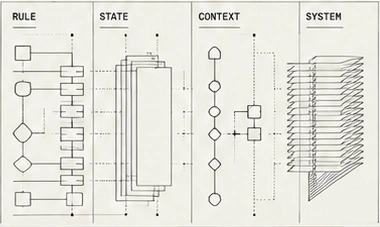
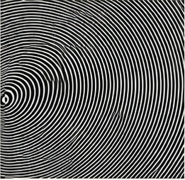
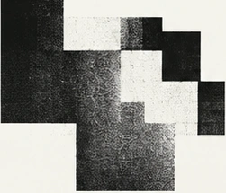
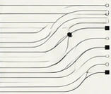

FASS /
Three environments.
One system.

APP
WEB
PROFESSIONAL
~20 developers /
One documented source of truth
PRODUCT
SYSTEMS
BRANDS
TEAMS
IDEAS
TO
USEFUL
THINGS
GOTHENBURG
SWEDEN
EST. 2011
57.7089° N
11.9746° E+
COMPLEX
PROBLEMS
CLEARER
PRODUCTS
FROM
COMPLEXITY
TO
CLARITY
57.7089° N
11.9746° E+
Three environments.
One system.

APP
WEB
PROFESSIONAL
~20 developers /
One documented source of truth
Senior Product Designer / Gothenburg / 13 years
Turning a mobile
website into
a mobile product.

Then I redesigned
what AI got wrong.
03 /
40.7128° N
−74.0060° W+
HUMAN
CONTEXT
BETTER
ANSWERS

SYSTEMS
PEOPLE
PROGRESS
Connecting teams
and customer
journeys.
